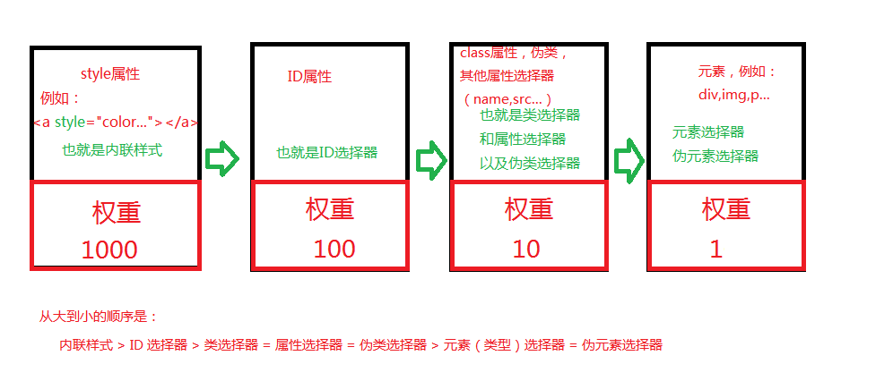

在我们做项目的过程中，为了便于管理和代码的整洁，我们都是使用外链式的样式或者style标签书写样式，那浏览器是怎么讲我们的css和对应元素关联起来应用到相关元素上的呢， 这就到了我们所要说的选择器了，众所周知我们在一个dom元素上有若干个属性设置，浏览器也正是通过属性值将css和元素关联起来的，同时在关联的时候也会有优先级的存在的， 浏览器通过优先级来判断属性值和元素的相关程度，从而在该元素上应用这些属性值，优先级就是不同种的类选择器组成的匹配规则。
优先级就是指定给css声明的一个权重，是由匹配到的选择器中的选择器类型的数值决定，当优先级相等的时候，那么css就会将最后声明的应用在元素上。
例如：在一个标签上添加两个style，一个里面设置“color:red;”，另一个里面设置“color:blue;”,那么到底会应用哪一个呢？手边有编辑器的可以动手试试，答案是：哪一个style声明在最后，
这个元素就会应用哪一个style的css。
当一个元素有多个css声明的时候，优先级才会有作用，因为每一个直接作用于元素的css总是会覆盖该元素之前的从父元素继承而来的规则。

注意：通配选择符（universal selector）(*), 关系选择符（combinators） (+, >, ~, ' ') 和 否定伪类（negation pseudo-class）(:not()) 对优先级没有影响。（但是，在 :not() 内部声明的选择器是会影响优先级）。
当在一个样式声明中使用一个 !important 规则时，此声明将覆盖任何其他声明。
说明：
个人认为使用 !important 是一个坏习惯，应该尽量避免使用，因为这破坏了样式表中的固有的级联规则 ，这样会对后续的维护和排除bug产生未知困难。当两条相互冲突的带有 !important 规则的声明被应用到相同的元素上时，拥有更大优先级的声明将会被采用。